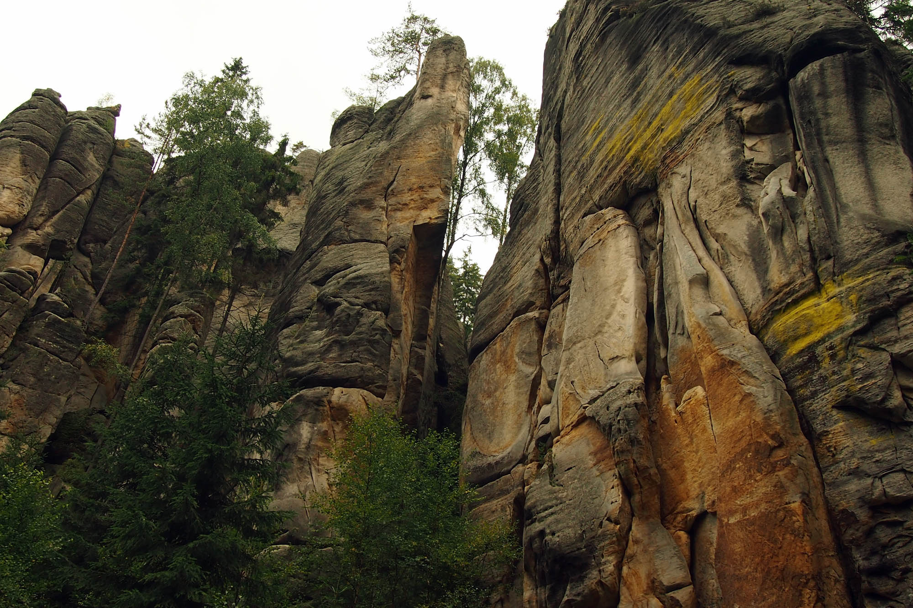
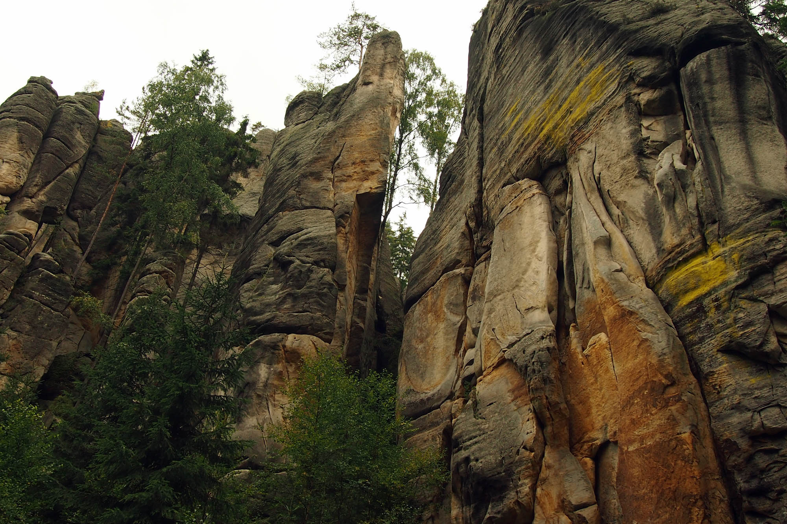

Környezet
A természeti környezet magában foglalja a Föld minden élő és élettelen dolgát, amelyek természetes módon megjelennek. Ilyenek az élő szervezetek, az éghajlat, az időjárás, a természeti erőforrások, amelyek hatással vannak az emberi életre és a gazdaságra.
Környezetvédelem
A környezetvédelem az a tevékenység, amely az emberi társadalom által saját ökológiai létfeltételeiben saját maga által okozott károsodások megelőzésére, a károk mérséklésére vagy elhárítására irányul. Másrészt ideológia, filozófia és mozgalom is. Maga a fogalom egyként jelenti azt a gondolatkört, mely szerint az emberiség felelősséget visel és persze függ is az őt körülvevő környezettől és azt a mozgalmat is, mely a különböző természeti és épített környezeti értékek megőrzéséért, annak élhetően és használhatóan tartásáért küzd. A környezetvédelem hasonlóságokat mutat a természetvédelemmel.
A túlfogyasztás két globális veszélye
- az erőforrások rohamos kimerülése
- a környezetszennyezés által kiváltott globális ökológiai katasztrófa
Mit tehetünk?
Ne terheljük feleslegesen a környezetünket!
- - takarékoskodjunk és használjunk lehetőség szerint alternatív energiákat
- - utazzunk tömegközlekedéssel
- - vásároljunk helyi és szezonális élelmiszereket
Kezdjünk újrahasznosítani!
- - komposztáljuk a konyhai és kerti hulladékot
- - gyűjtsük szelektíven a hulladékot
- - pl. ismerjük meg az EU NATURA 2000 Programját!